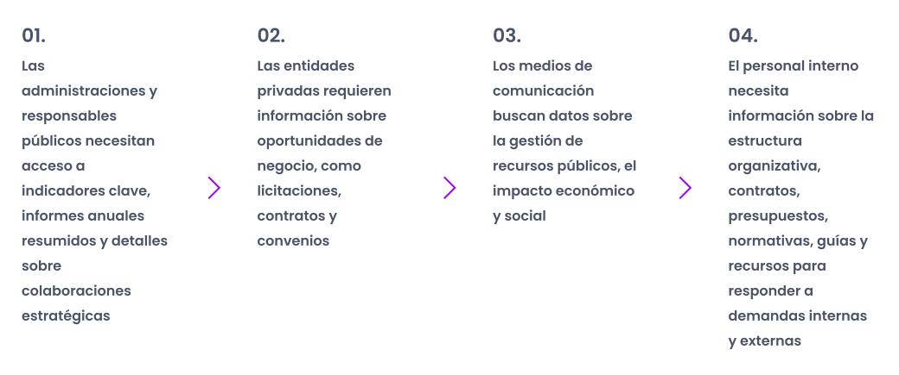

¿Cómo estructurar y optimizar la página de Transparencia dentro de la web para centralizar la información pública, mejorar su accesibilidad y garantizar la transparencia de una organización?
El reto fue rediseñar una página que reflejara los valores de transparencia de la organización, asegurando accesibilidad, cumplimiento legal y facilidad de uso. El objetivo era ofrecer un espacio claro y navegable donde los usuarios pudieran encontrar fácilmente información sobre la organización y el desarrollo de su actividad.
Rol
Diseñadora UX/UI principal
Skills
Metodología Design Thinking
Investigación de usuarios y análisis de datos
Arquitectura de la información y Sitemaps
Creación de wireframes y prototipos
Herramientas
Figma
Drupal
01. Descubrir, entender y empatizar
Comprendiendo el desafío y los objetivos de la investigación
Definición de requisitos y objetivos junto al área de Transparencia de la organización.
Investigación de páginas similares para identificar buenas prácticas y áreas de mejora.
Análisis de necesidades de los usuarios que visitan estas páginas, información consultada y dificultades que enfrentan al navegar por páginas similares.
Se realizaron 11 entrevistas con perfiles clave para comprender las necesidades de los usuarios, destacando la importancia de acceder a datos de gestión, normativas y herramientas de consulta. Los hallazgos ayudaron a identificar puntos críticos y prioridades de mejora.

Hallazgos de la investigación
Tras analizar la investigación exploratoria, el peer benchmarking y las entrevistas realizadas se identificaron los siguientes hallazgos clave:
Debe cumplir con la normativa de transparencia y los requisitos del Consejo de Transparencia y Buen Gobierno de España.
La navegación es confusa y poco intuitiva, lo que dificulta encontrar información.
El diseño es estático y poco atractivo, sin elementos visuales o interactivos.
No se destaca el impacto institucional, los logros ni la relevancia de la organización.
02. Definir el desafío
Audiencia objetivo
En esta primera fase nos centramos en dos perfiles clave: Consejo de Transparencia y Buen Gobierno y personal interno de la organización. La elección responde a la necesidad de garantizar el cumplimiento normativo, mejorar la eficiencia operativa interna y establecer una base sólida sobre la que iterar. Estos perfiles representan los pilares de la transparencia institucional y son fundamentales para el éxito inicial del rediseño.
La página de Transparencia actualmente no facilita el acceso a la información clave. Por un lado, los auditores tienen problemas para encontrar datos organizados y actualizados, lo que dificulta su trabajo. Por otro lado, el personal interno pierde tiempo buscando información y recursos debido a una navegación desorganizada. El rediseño debe conseguir que la información sea fácil de encontrar y entender, asegurando el cumplimiento normativo y reforzando la confianza en la organización.
03. Idear la solución
How Might We
Para garantizar que la nueva página de Transparencia responda a las necesidades de los auditores y del personal interno, analizamos los principales problemas detectados. A partir de ellos, formulamos los siguientes "How Might We", que nos ayudaron a mejorar la navegación, la organización de la información y el acceso a datos clave de manera más eficiente y alineada con la normativa.
Priorización
Para priorizar el rediseño, se utilizó una matriz de usabilidad y viabilidad para evaluar el impacto y la viabilidad de cada funcionalidad propuesta, junto con la matriz MoSCoW para definir su prioridad en el MVP. Este análisis permitió definir las funcionalidades esenciales para garantizar tanto el cumplimiento de la Ley de Transparencia como las mejoras críticas en navegación y organización de la información para mejorar su acceso a los usuarios.
Para estructurar la arquitectura de la información, nos enfocamos en garantizar un acceso rápido y organizado a los principales recursos de transparencia. La organización del contenido priorizó la claridad y la navegación, facilitando la consulta de normativas, datos económicos y material público relevante. Esta estructura permite a los principales usuarios encontrar la información esencial que necesitan en menos clics, además de asegurar el cumplimiento normativo.
Los dos principales flujos de usuario se concentraron en reflejar las necesidades a las que tenía que responder la página de Transparencia para que estos usuarios pudieran alcanzar sus objetivos. Por un lado, María (auditora) revisa la página para asegurarse de que la información cumple la Ley de Transparencia, mientras que Javier (administrativo) la utiliza para responder consultas internas sobre normativas, personal y presupuestos. María se enfoca en detectar errores y reportar incidencias si algo no cumple la Ley, mientras que Javier busca documentos concretos para resolver solicitudes de departamentos internos. Ambos necesitan acceder rápido a la información, pero con objetivos muy distintos.
Enfoque MVP para resolver el planteamiento del problema
Para abordar el problem statement, el enfoque del MVP se centró en garantizar que la página de Transparencia respondiera a las necesidades de sus dos principales usuarios: auditores/as, que buscan verificar el cumplimiento normativo, y personal interno administrativo, que necesita localizar rápidamente datos administrativos para responder consultas internas. Se priorizaron las siguientes funcionalidades clave:
Estructura clara y categorizada para facilitar la navegación y consulta de información.
Indicadores de actualización en documentos para informar de la validez de los datos.
Mecanismo de reporte de incidencias de la información publicada.
04. Diseñar con propósito
Wireframes
Para este proyecto, diseñé los wireframes en baja y alta fidelidad con el objetivo de estructurar de manera clara la información clave de la página. El wireframe en baja fidelidad permitió definir la jerarquía de contenido y la disposición de elementos como secciones, menús y módulos interactivos, asegurando una experiencia de usuario fluida. Posteriormente, el wireframe en alta fidelidad consolidó estas decisiones visuales con el equipo dentro del sistema de diseño preestablecido, optimizando el acceso a documentos para minimizar las posibles fricciones durante la experiencia de navegación.
Para este proyecto, me aseguré de alinear el diseño con el sistema establecido por la organización, respetando su manual de marca y la estructura basada en Drupal y Bootstrap que utiliza. La retícula y la tipografía Montserrat garantizan una coherencia visual con la marca y sus activos digitales, mientras que los componentes reutilizables, como encabezados y acordeones, facilitan la navegación, el mantenimiento y la escalabilidad.
El prototipo de la página de transparencia prioriza la organización y accesibilidad de la información mediante un sistema de acordeones que permite visualizar todas las categorías con un mínimo de desplazamiento. Dentro de cada acordeón, los usuarios pueden acceder rápidamente a documentos y sus históricos sin depender de enlaces externos, centralizando el contenido en un solo lugar. Esta solución no solo optimiza la navegación, sino que también refuerza la transparencia al hacer que los datos sean más accesibles y fáciles de consultar.
Se realizaron pruebas con usuarios internos, tanto expertos en normativas de transparencia como personal administrativo. Los resultados reportaron que la centralización de la información, su organización mediante acordeones y los indicadores de fechas facilitaba la localización, consulta y uso de documentos. En general, se mejoraró la navegación pero se detectó la necesidad de mejorar la visibilidad del historial de documentos. Estos hallazgos permitieron priorizar ajustes clave para garantizar a los usuarios mejor accesibilidad y cumplimiento de las normas de transparencia.
Reducir el uso de enlaces externos centralizando documentos en un solo lugar mejoró su accesibilidad.
Los acordeones facilitaron la navegación, reduciendo el scroll y mejorando la organización y consulta del contenido.
Los indicadores de actualización no siempre son visibles, lo que dificulta identificar cambios recientes en los documentos.
Para futuras versiones, se reducirá el número de categorías para mejorar la localización de documentos, se optimizarán los formatos de descarga priorizando los más usados y se mostrará un historial de versiones para facilitar su consulta.
Let's Work Together • Let's Work Together • Let's Work Together • Let's Work Together • Let's Work Together • Let's Work Together •